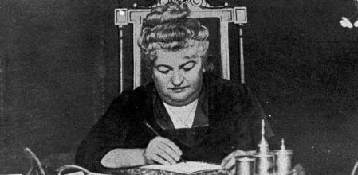
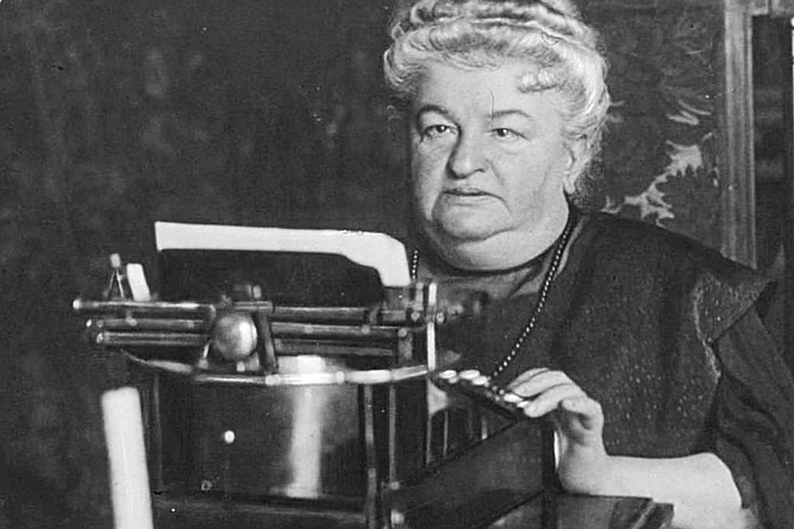
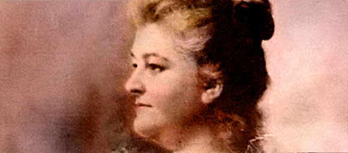

Iconas
Emilia Pardo Bazán



Ficha rápida da icona
- Nome: Emilia Pardo Bazán
- Naceu: A Coruña, 16 de setembro de 1851
- Morreu: Madrid, 12 de maio de 1921
- Profesión: Escritora e xornalista
- Obra máis coñecida: Los Pazos de Ulloa
- Coñecida por: Introducir o naturalismo na literatura española e defender a igualdade e a educación das mulleres.
A icona en si
Hai pouco entrei na Casa Museo Emilia Pardo Bazán sen ter moi claro que esperaba atopar. Xa coñecía a súa historia, pero saín coa sensación de coñecela un pouco mellor. Ás veces esquecemos que detrás dos libros hai persoas reais, con manías, dúbidas e horas diante dun escritorio.
Emilia Pardo Bazán naceu na Coruña en 1851 e foi unha das escritoras máis importantes da literatura española. Escribiu novelas, contos, ensaios, artigos e foi unha gran defensora da cultura e da educación. A súa obra máis coñecida é Los Pazos de Ulloa, unha novela ambientada na Galicia rural do século XIX que segue sendo unha das grandes referencias da literatura española. Tamén publicou La madre naturaleza e La Tribuna, onde abordou temas como as diferenzas sociais, o papel das mulleres e a realidade da clase obreira.
O que máis me sorprende dela é que nunca aceptou os límites que lle querían impor. Nun momento no que moitas mulleres nin sequera podían acceder aos mesmos espazos ca os homes, Emilia escribía, daba conferencias, traducía obras e defendía que as mulleres tiñan dereito á mesma educación e ás mesmas oportunidades. Incluso intentou entrar na Real Academia Española, pero non llo permitiron simplemente por ser muller.
Creo que moitas veces lembramos a Emilia só como escritora e esquecemos todo o que fixo para abrir camiño ás que viñeron despois. Non debía ser nada doado defender as túas ideas sabendo que moita xente estaba esperando que calases. E, aínda así, nunca deixou de escribir nin de opinar.
Hai unha cousa que me gusta especialmente dela. Emilia dicía que para escribir había que observar. Quizais por iso me sinto tan cómoda entre documentos antigos. Ao final, tanto ela como eu pasamos moito tempo intentando entender historias. A diferenza é que Emilia as convertía en novelas, e eu acabo escribindo sobre elas neste pequeno recuncho de internet.
Bibliografía
Colaboradores de Wikipedia. (2026, 12 xuño). Emilia Pardo Bazán. Wikipedia, la Enciclopedia Libre.
https://es.wikipedia.org/wiki/Emilia_Pardo_Baz%C3%A1n
La Casa-Museo. (s. f.). Casa-Museo Emilia Pardo Bazán.
https://casamuseoemiliapardobazan.gal/es/la-casa-museo
Biografía de Emilia Pardo Bazán. (s. f.). Biblioteca Virtual Miguel de Cervantes.
https://www.cervantesvirtual.com/portales/pardo_bazan/autora_biografia/